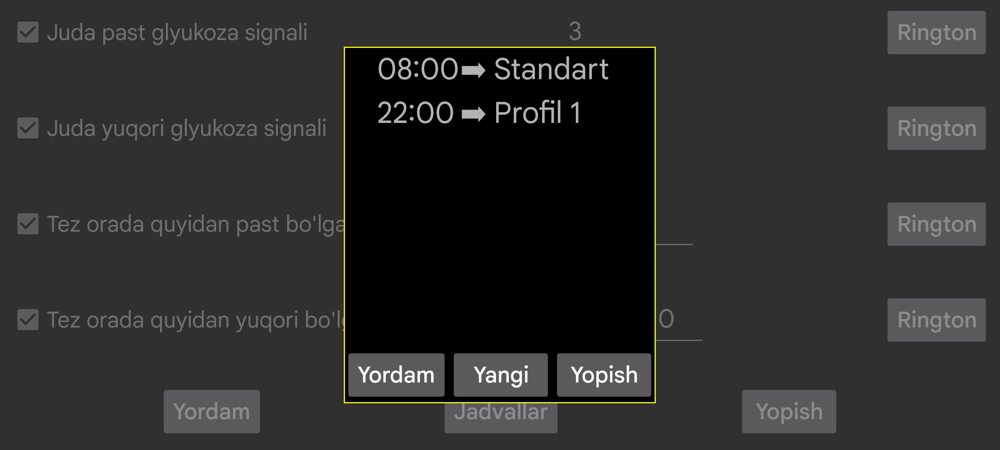
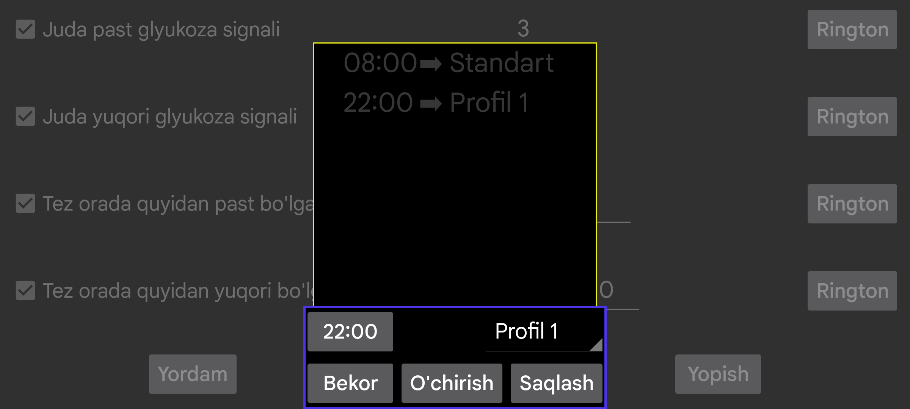

Profil ma’lum vaqtda faol bo‘lishi uchun jadval tuzing. Muayyan vaqt bilan profil o‘rtasida bog‘lanish yaratish uchun Yangi tugmasini bosing.
Juggluco har kuni ko‘rsatilgan vaqtda shu profilga o‘tadi. Vaqt va profil bog‘lanishini tahrirlash uchun uning ustiga bosing.
Signallar va Gapirish bo‘limlaridagi barcha sozlamalar umumiy profilga bog‘liq. Qaysi profil faol ekanini chap menyu → Sozlamalar → Signallar va chap o‘rta menyu → Gapirish bo‘limlarida ko‘rasiz.
Dastlab profil Standart bo‘ladi. Uni Profil 1, Profil 2 va hokazolarga o‘zgartirishingiz mumkin. Signal va Gapirish bo‘limlarida kiritgan barcha parametrlar aynan faol profil uchun saqlanadi.
Ba’zi foydalanuvchilar profillarga o‘tishni jadvalga qo‘yish mumkin, lekin uni tugatib bo‘lmaydi deb o‘ylashgan. Aslida siz shunchaki Standart profiliga qaytaradigan yana bitta element qo‘shishingiz mumkin. Bu yakunlash vaqtini kiritish bilan bir xil natija beradi.